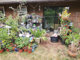

The one on the left is version 1 of this project. It was a proof-of-concept, but it worked so well as a water-conservation device at an extremely low power cost, I saw no reason to discontinue it's use.
The one one the right is actually just the Raspberry Pi on which it's all running and logging. That's my database and serves the UI over the local network as a LAMP stack. I have custom-built my Firewall, Intrusion Detection System (IDS) and Intrusion Prevention Systems among many more layers of security in my personal network. This ensures the integrity of my systems as well as the integrity of my growing data puddle.
|  |
|